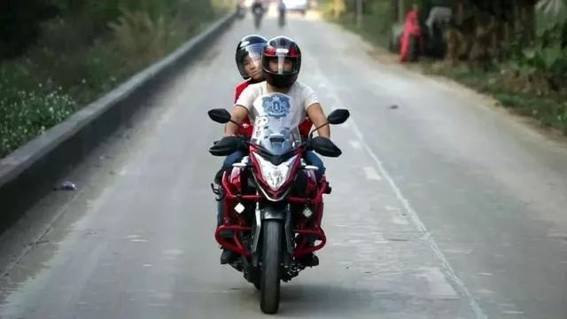
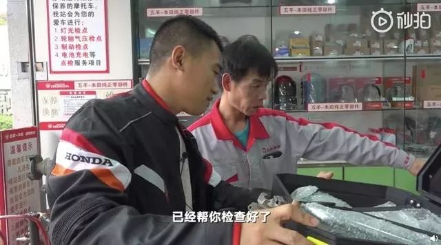
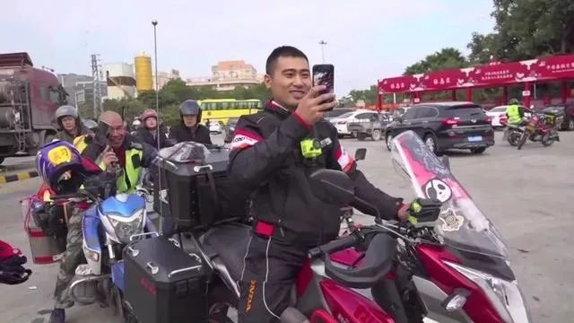

排查、劝返、大喇叭、封路，农村这样防肺炎
原文链接 备份链接 《战疫口述记》，是燃财经在新型冠状病毒肺炎期间推出的特别栏目，记录疫情亲历者的观察和感受。本文为第2期，第1期请见《我在武汉战肺炎》。 作者 | 闫丽娇 唐亚华 孟亚娜 金玙璠 黎明 孔明明 苏琦 编辑 | 周昶帆 春 …


编者按：2020年1月12日，在广东省中山市打工的李小刚骑上拉力摩托车，载着老婆开始了1400多公里的返乡路。彼时，路上还没有戴口罩的人，李小刚的返乡路是中国历年春运大潮中无比普通的一次。一周后，新型冠状病毒肺炎疫情扩大。为了减少人口流动，控制疫情，一部分人没能返乡过节。但对此刻的中国人来说，返乡的路就像李小刚的旅程，身隔两地，心相系，虽远必至。《极昼》愿每一个读者能像李小刚一样，平安抵达，幸福康乐。
文｜
高佳
编辑｜林鹏1月12日，春运开始的第三天，在广东省中山市打工的李小刚骑上拉力摩托车，载着老婆开往1400多公里外的四川省泸州老家。这是李小刚来到中山的第15年，他第一次成为“摩托大军”中的一员。骑摩托车返乡最早可以追溯到2000年春运，珠三角的一些务工者三五成群，结伴而行，骑车回广西、贵州、湖南、四川等老家过年。2008年，春运期间骑行在路上的务工者们吸引了媒体关注，广西省梧州市——不少务工者西行的必经之地，过境的摩托车高达13万辆，他们成了人们口中的“摩托大军”。根据梧州市交警支队的统计，今年春运，“摩托大军”的数量降至3万左右，在2013年春运高峰时，这个数值达30万之高。选择骑行上路的人，例如90后李小刚有骑摩托的爱好，也不再仅仅因为“一票难求”，最早打算骑车返乡时，把它计划成一次“旅程”。李小刚打算开春时去别的省份打工，他之前在中山做工装水电工，“现在扩张、翻新的厂房少，活也越来越难找。”中山到泸州，这趟路他走了15年，2020年或许是最后一趟，这些年的“广漂”生涯，就借摩托车返乡画个句号。和所有在路上的人一样，30岁的李小刚在年尾短暂“歇脚”，然后继续为了生计奔波，在故乡和下一个远方。以下是李小刚的口述：
1
我有一台拉力车，是去年8月份花一万六千块钱买的。它比一般的摩托底盘高，可以跑山间路。
我喜欢“跑山”（编者注：山路多弯道，跑山是常见的摩托车玩法），中山有个五桂山，我和车友群里的朋友常去，在那儿能看景，能呼吸新鲜空气。除了满足爱好，这车平常接活做工时也能骑，车的极限速度是117km/h，在市区，我一般控制速度在30km/h到50km/h。它油耗低，在市区通行，油耗1公里1毛2分钱。
我早就打算过年时骑摩托回家。今年1月12号早上7点，我骑着它从中山向北，赶到佛山，跟另外两个骑摩托回四川的老乡汇合之后，10点多钟往西走，正式踏上返乡路，加上我老婆和《新京报》做直播的记者，我们一共有9个人。
1月初，记者联系到我，说想跟拍一对夫妻骑摩托车春节返乡，定下的启程日期是12号。我做水电工，接一些零散的小商户、小厂房的水电装修，做一天活拿一天工资，放假时间能自己定。我老婆在制衣厂打工，经常有客户年底发单，说要赶工卖年货，她们放假的日期就跟着推迟，好在今年老板松了口，说1月份接的1万件货做完就放假，她们紧赶着，也在12号前完工了。
一起回家的老乡常年骑摩托车返乡，跑过十多趟，我们商量走福昆线，经过广东江门，广西贵港、河池，进了贵州就从麻尾收费站直接上高速，一直往北到仁怀，再进四川。
去年国庆假期我走的是反方向，骑摩托从老家到中山。那次直接走夏蓉高速，从贵州仁怀进，广西桂林出，假期期间高速路免费。当时我不赶时间，也没具体计划，会转转景点，找些当地小吃，在广西吃了老友粉、麻鸭、梧州龟苓膏，几乎全程走高速，路上只花了两天时间。

返乡前，李小刚在检查摩托车。图片源自网络
这次带着老婆一起，又是冬天，骑得慢些，一般跑40km/h到60km/h的速度，半天下来有个把小时跑上70km/h。我们早上7点钟出发，晚上7、8点钟在路上经过的乡镇歇脚。前三天每天走400多公里，最后一天下了贵州的高速，走了大概270公里，15号回到老家泸县洪滩村。
在路上，每跑一两个小时，我们就得停下来休息10分钟。最强烈的感受是冷，第二天过了广西河池之后开始下毛毛雨，我穿了四条裤子，还是冷。毛毛雨很难形成水滴，要时不时用手套把面罩上的雨擦掉，后来因为头盔内外的温差太大，总是起雾，只能把面罩打开，面部裸露在外面，雨一直往眼睛里钻，下车的时候，眼睛都充血。
那天也原本打算天黑时就歇脚，但广西的交警看起了雾，又下雨，已经在前面20公里处等我们，准备好给我们开路。我们赶到他们的站点，在他们护送下到了广西和贵州交界处，又往前走了10公里，到了贵州的麻尾镇，夜里11点半，才找了住处休息。
我老婆穿着黑色的雨衣，当时我越看越觉得她像个粽子，从那天一直笑她到家。她在后座，没办法活动手脚，更是冷得厉害，在麻尾上高速之前，我怕她抵不住，让她坐上了记者们的汽车。
这一路虽然天气恶劣，但有人陪着，没觉得很难度过。我本身就喜欢骑摩托，它给人一种自由、没有束缚的感觉。一个人骑车的时候，耳朵边只有“轰轰”的风声，感觉自己真正地属于自己，唱啊、吼啊，都没人会在意。
路上让我印象深刻的，还有广西贵港平南县的白切鸡。虽说是四川人，在广东待了十几年，我的口味也变淡了。我喜欢吃广东的粉，水烧开，粉烫上15到20秒，加一点佐料就成了每天的早餐。
2
往常我们过年回家，大多时候是坐大巴。我们那儿在中山打工的人多，光我们村就有十几个，中山有直接开到泸县的大巴车，53座，票价最便宜的时候卖80元，平常浮动在180元到280元之间，孩子开学前后和年关涨价厉害。
2009年，我爸妈还在中山打工，老婆第一次回我家过年，票价涨到560元，我们四口人过年车费花了5000多块钱。大巴一般凌晨4点钟发车，第二天中午到泸县，选择坐大巴，也不光是因为抢不到火车票。每年都有人打算离开，回家时带着锅碗瓢盆，这些东西坐火车不好带，但客运大巴可以接受，装在底层车厢里，多带了东西也只另收三五十块钱。
这次骑车返乡是计划已久，我也算车技熟练，没太大担心，但路上还是差点遇到危险。
在高速上，有个黑色的大众轿车，进服务区之前从左侧连跨两个车道，在我面前导流线上轧了过去。他的车尾距离我的摩托前胎不到一米，如果我车速快，肯定撞了。那句话怎么说的，别人是铁包肉，咱们摩托是肉包铁，只能万般小心。
在国道、省道上情况就更复杂。我们经常看到一些面包车、小车经过路口时，不管单黄线、双黄线，直接就掉头。从广西经过的时候，会路过一些乡镇集市，开得慢慢地，喇叭也不敢摁。因为是外地人，打了喇叭，如果真遇到蛮横不讲理的，不爽了，直接倒在我面前，那真是百嘴难辩。有时候大人在集市上买东西，小孩子没被牵住，一下子跑到路中间，也危险得很，所以碰到这种路段就急不得。
从贵州下了高速之后，到四川省内，又走了一段山间路，地势上麻烦一些，路几乎都是盘山而建，弯度大，路面又窄，我们刚好遇到一队货车，他们一边走，一边给刹车片降温，我们也不敢超车，摩托车的喇叭声小，货车可能听不到我们鸣笛，所以一直跟在后面走。
好像骑车的时候，思维会很发散。在广西梧州，我看到有工程队在开山采石，灰尘很大，旁边地里的庄稼都没法活，会想到以前看过的宫崎骏的动画片。环境真的会被破坏到像片子里那种地步吗？每个人都戴口罩，或者戴头套来呼吸，孩子们只能通过课本或电脑，来看到蓝天、白云、绿树。转念一想，怎么这个地方的监管部门不去管呢？又联想到自己的工作，我也是做城市建设的，城市建设需要这些原材料，目前没有更好的科技手段去介入来制造这些原材料，那也只能就地取材。
天气好了，我就想，等一下不知道能在路边看到什么小摊，不知道能买到什么东西吃。下雨的时候，就想不知道什么时候天会变晴，骑到哪里可以变晴。

返乡路上的李小刚夫妇。图片源自网络
3
因为被记者选中跟拍，在我们村里人看来，我也算出名了。
其实不过是因为我正好和老婆一起回家，又能赶上12号这天启程，正好符合他们的拍摄需要。刚到家那两天，村里人见面都说：“这下出名了。”我说：“出啥名，不还是那个人名？”
要说买个福利彩票中了500万，还能让我高兴个两三年，出名就是一个短期内的事，不稀奇。像前几年我们这儿勘测石油一样，那时候外国的专家也来了，飞机成天在头上飞，村里人很稀奇，我说：“有什么好稀奇的？我也不希望把我的地占了，把我弄到城市里去。”
在城市里不自由，我在老家音箱开多大声，都没有人来投诉。城市是发展的方向，但我的归属还是在农村，农村才给我安全感，让人放松下来，城市太紧张。我们装修工去城里小区做事，看见人家停车还要抢个车位，麻烦得很。我家院子里，只要亲戚朋友来，那不是随便让你停？
在中山，我们这行去年生意不景气。我有时一个月只接到一两个礼拜的活，挣三四千块钱，开支都不够。去年元旦，我在东莞的工厂接了一单，工厂门卫说：“你看现在100个人都不到，以前我们这厂人多得很。”
可能因为国家注重抓环保，最近两年广东的厂子经济效益不像以前那样好，间接导致了我们这些做散工的没活。记得2015年、2016年，赚到钱的厂子总是要翻新，我们总有事情做。有不少还要扩大规模，四五百平的厂房，3、4个人做水电装修，差不多要做十几天，我几乎每个月都能接上两三单，干满30天。现在不光翻新、扩张的少了，连日常维修，比如修风扇、换灯泡这些也少了，都将就着用，控制成本。
所以我去年有一段时间只能在外地找活，8月份在老家买了摩托车之后，接到广西玉林的一单，骑车过去，干了半个月后回家。10月份又从家骑车到中山，我想，2020年我应该要离开广东了，车肯定也要骑回去，它体积大，用物流的话要花800多块钱。

和李小刚同行的还有两个四川老乡。图片源自网络
去年过年时，我就不想再回广东了，但在老家做工，一整天东奔西跑也就（挣）200块钱，去掉油费、生活费，剩下150块都难，这低于我的预算。前两天我表哥放假回来，说有两个工地要人，一个在江西，一个在山西，可能过完年我就定下去哪。
广东那边见了太多人情世故，说出来都是苦。
2018年10月份，我在做活的时候敲钉子，钉子尾部爆了，有碎渣进了眼睛里，我以为进了沙子，没当回事，后来开始流血，跑去医院又打电话给工头，他们都不接。我们不签劳动合同，也没有医保，又没人证明我在那里做事，工地上的人甚至说：“我又没叫你来，你是谁我都不认识。”最后我只能自己贴了13000块的医药费。
再早几年，我一连丢了4辆公路单车，一辆要350块钱。保安也不管，我跟老板说：“不做了，在你这做一个月，得拿半个月的工资来买单车。”老板说：“我给你赔一辆。”又坚持做了一个礼拜，单车没有赔给我，我又去辞职，老板不爽：“又不是没事情给你做，你每天多加一个小时班，干几天又可以买一部单车了。”
我刚来到中山时才15岁，还在读初一。那时候我父母都在中山沙溪镇打工，母亲在制衣厂剪线头，父亲在工地上干活，我在老家听说他们要离婚，急着来找他们，就这样待下来，在制衣厂里找了个活，工资拿1100多块钱。
我们初中班上的同学，凡是出来打工的，90%都来了广东。那时还有些叛逆心理，想着交朋友，过成年人的生活，等过了青春的懵懂期，到了18、9岁，就开始想着赚钱了，其他一切都不那么重要，有钱说话才硬气，不用看别人的脸色。
其实，按照我之前的计划，最后这趟从中山到泸县的路应当是这样走的：12号从广东出发，13号把广西跑完，去贵州遵义转一下，接着出发去四川爬折多山，如果能爬上去，身体没有高反的话，就为以后走318（国道）进拉萨做好了准备。从山上下来去自贡，那边产卤水井盐，营养更好，从自贡下来到永川，跟永川的朋友聚一天，19或20号返回老家。
但接受拍摄就要符合“返乡”主题，不能绕路，这个计划暂时搁浅了。也有一点好处，就是能早几天见到儿子。
我儿子读二年级，平常是他奶奶带着。我曾经也是留守儿童，现在长时间出去打工，更觉得愧对他。有一次开家长会，老师指定要孩子父母亲参加，不许奶奶代替，我就把活给推了，特意等着。看到别人的爸妈陪着孩子开学、过生日，他没有，他难过，我也难过。
但他挺懂事的。去年10月份，我骑摩托去中山的时候，他就问：“那你之后还骑回来吗？”现在每天早上，奶奶骑车20分钟把他送去读书，这么短一段路，他也感觉到冷，知道在路上会打瞌睡，他就说：“骑车太冷了，把车放在客运车上拉回来吧。”
后台回复”读者群”, 加入更多讨论
作者简介

*高佳*
因为时间永远分岔，通向无数的将来。

小昼
微信扫一扫赞赏作者 赞赏
长按二维码向我转账
受苹果公司新规定影响，微信 iOS 版的赞赏功能被关闭，可通过二维码转账支持公众号。
原文链接 备份链接 《战疫口述记》，是燃财经在新型冠状病毒肺炎期间推出的特别栏目，记录疫情亲历者的观察和感受。本文为第2期，第1期请见《我在武汉战肺炎》。 作者 | 闫丽娇 唐亚华 孟亚娜 金玙璠 黎明 孔明明 苏琦 编辑 | 周昶帆 春 …
原文链接 备份链接 自新型冠状病毒爆发以来，很多从武汉返乡的工作者、大学生接到了当地社区的电话，或者填写了关于个人信息的调查表。疫情当前，这一切都是为了“配合疫情防控、对抗病毒传播”。可是事情的发展渐渐走了样。大年初二一早，#武汉返乡人员 …
原文链接 备份链接 今天想和你们谈论一个常识。 那个父亲患病住院直至去世都不得不自证清白洗脱造谣指控的年轻人的微博我也看了，无以言表的难受。 我要说的是，在这种重大的突发的灾情期间，真假消息参杂涌现，是一件极其正常的事情，如果把这其中「流 …
原文链接 备份链接 27.01.2020本文字数：3361，阅读时长大约6分钟 导读：自1月6日开始到17日，武汉新冠肺炎12天未报告一例新增病例，并在较长时间内一直强调“未发现明确的人传人的证据”，在相当程度上导致社会各界缺乏警惕、疏 …
原文链接 备份链接 【财新网】（记者 王梦遥 覃建行）应对武汉新型冠状病毒肺炎的防控措施正逐步升级，一些次生舆情也在显现。不少从武汉返乡的人员在配合有关部门工作的同时，发现自己的个人信息被泄露。有受访者表示，从武汉返乡的人理应被重点关 …